Welcome
I'm Lucas
digital designer (UX/UI & Product)
living in Nantes.
Born with a GameBoy in hand, I gave up my childhood dream of becoming a paleontologist to become a UX Designer. Why? Simply because I've always loved tinkering, creating, learning and understanding.
We've worked together
Akeneo
- Set up a proper user research organisation. Over 2 years, customer feedback volume grew fourfold between 2017 and 2019, making user feedback a key factor in product decisions once again;
- Improved user onboarding by designing a Free Trial, still active since 2021;
- Designed and launched the Akeneo Onboarder (2018) and Akeneo Shared Catalogs (2020) products, both still on sale today.
- Designed experimental flows integrating AI into our users' UX.
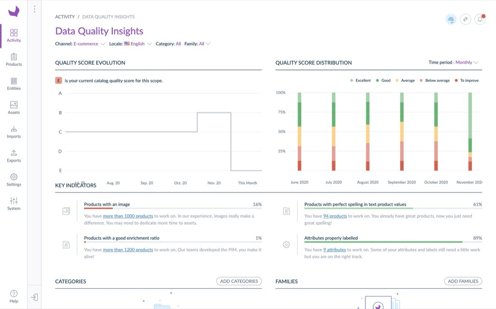
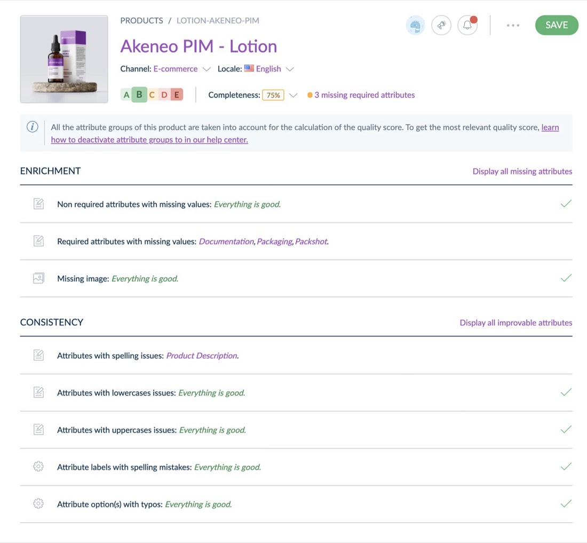
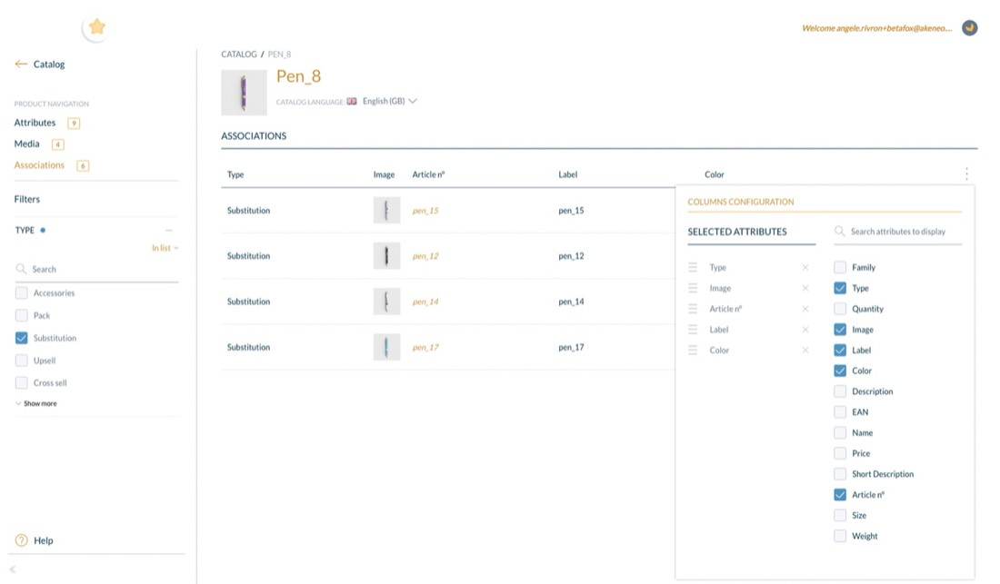
Greenly
- Lead Product Designer: built the design strategy and product culture, including setting up rituals, tracking metrics, organising quarterly kick-offs and team buildings, hiring, and onboarding teams to design practices. Grew the Design team from 1 to 3 in 11 months and created a skills/salary grid as part of the company's pay transparency policy;
- Designed a persona shared across the whole company: Lauren;
- Launched a Design System and fully redesigned the platform with a commercial goal in mind. Increased positive customer feedback on UX, with the fundamentals still in use today.
👁️ The interface when I joined, Q4 2021
⭐️ New interface following the Design System launch, post Q1 2023: see it here, here too, or here as well.
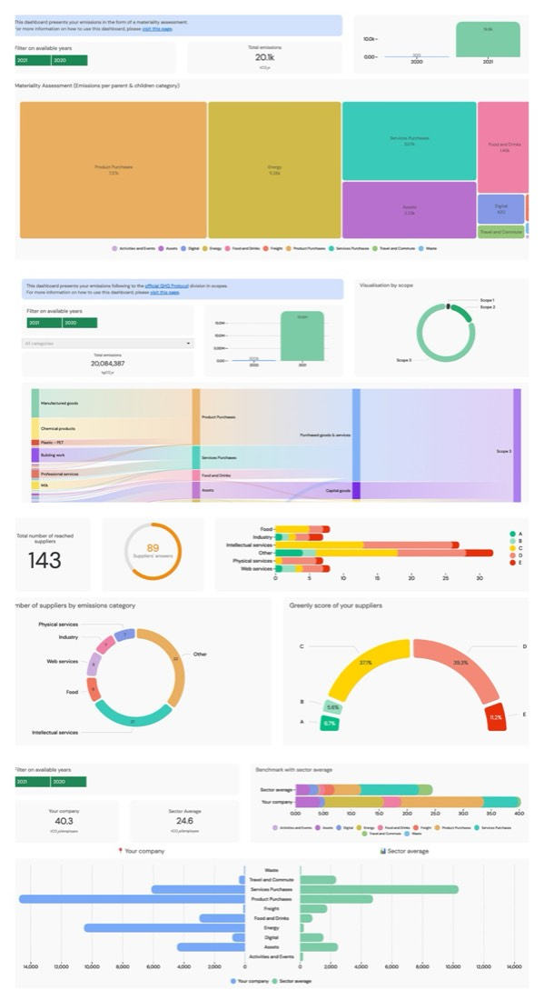
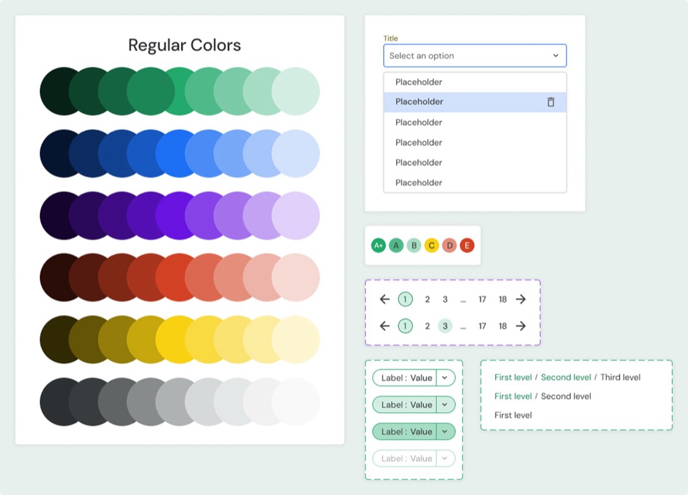
beta.gouv.fr
- Zéro Logement Vacant project — "Zero Vacant Housing" (since July 2023):
- complete redesign of the tool's experience: lots of positive feedback on ease of use / NPS: 60 in Q1 2025 and 68 by the end of Q2 2026. The French Court of Auditors' report highlights the tool's ease of use and onboarding (page 19).
- Redesigned the showcase website's navigation architecture. Supported our visibility goal: for the search "vacant housing", average Google ranking improved from position 12 to 7 in 3 months.
- Bonus: secured over €50,000 in funding for making the tool accessible.
- Created pull requests using Claude and Mistral for bug fixes, features, and accessibility (RGAA) corrections.
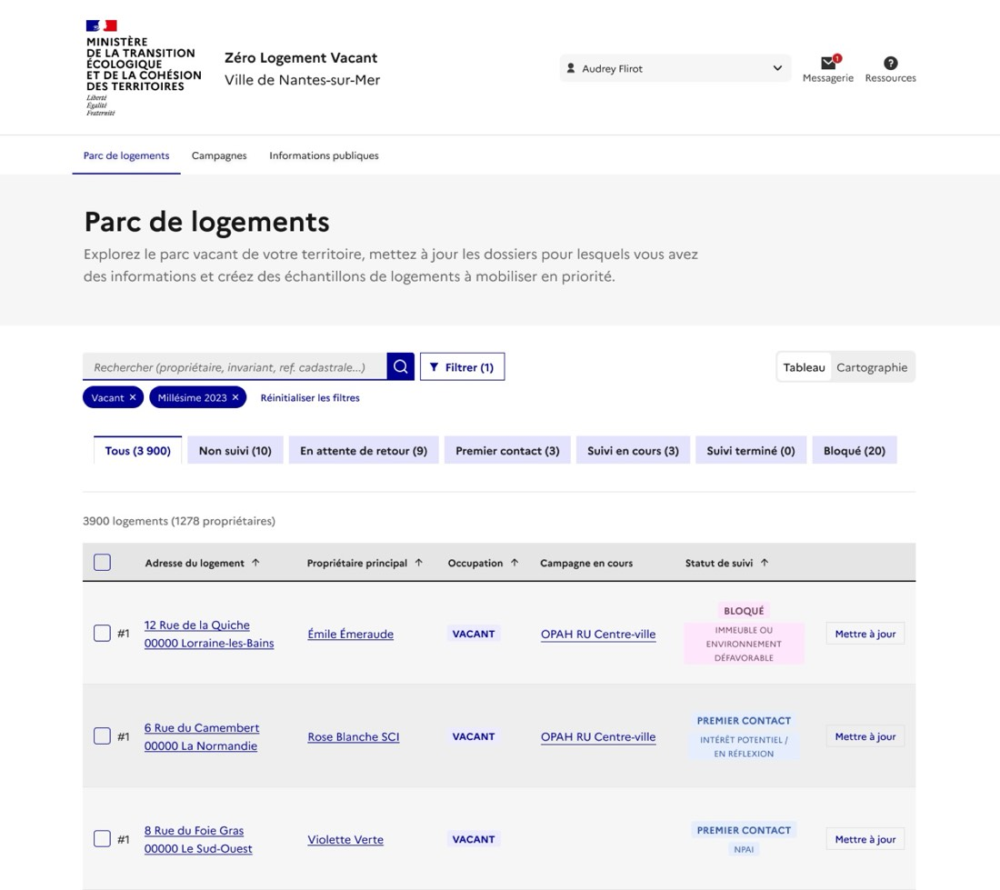
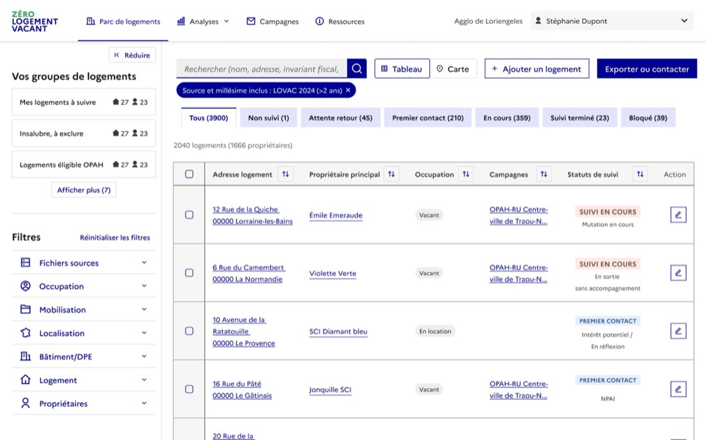
- Que faire de mes objets et déchets project — "What to do with my items and waste" (since January 2024):
- built a 35-member user panel: 63% participation in discussions and 60% participation in the workshops and surveys offered.
- UX design of the first circular economy map in France
- led the accessibility project for the Que faire de mes objets & déchets? website: RGAA score of 55.77% in Q1 2022, then 100% by the end of Q4 2025.
- AI prototyping of the sorting, repair and reuse assistant, with field guerrilla-testing in Nantes and Angers.
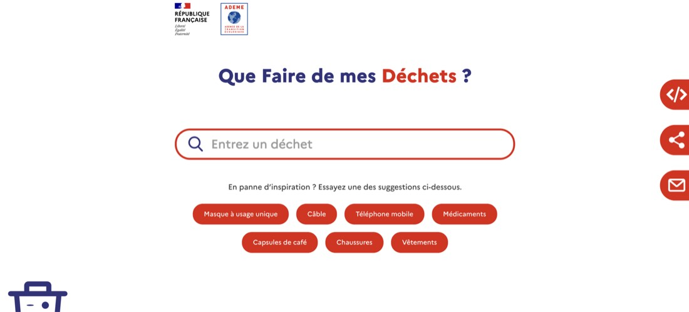
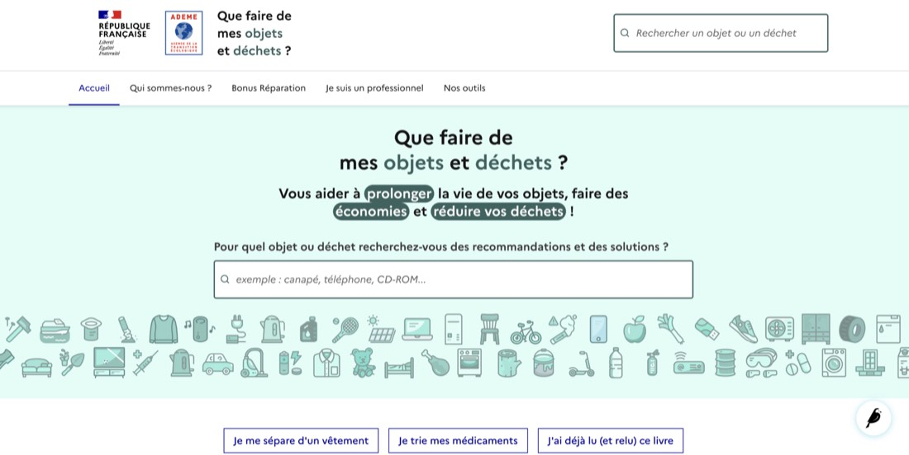
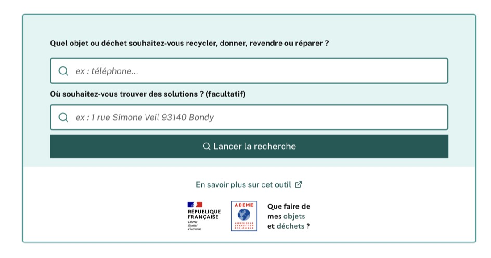
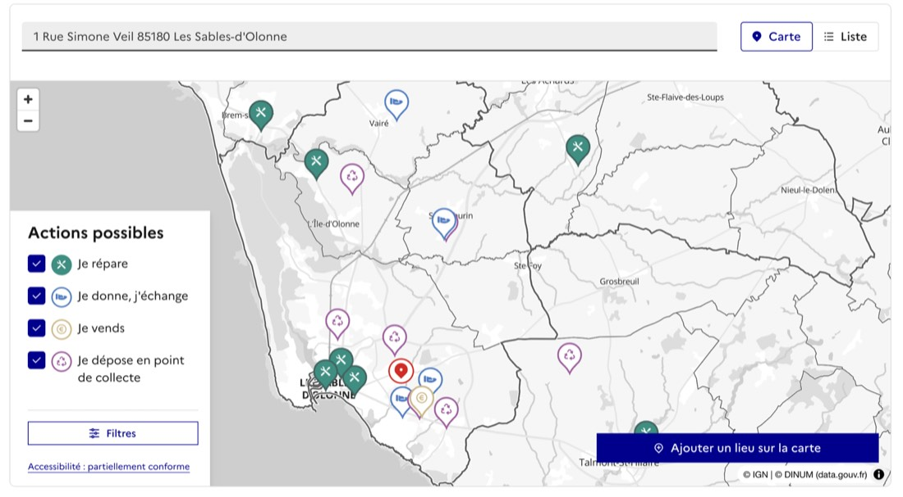


How I work
Social
Outward-looking and curious, I aim to improve the user experience while making life easier for the teams I collaborate with.
Honest
Transparent, direct and respectful, we share our findings together and move forward without surprises.
Proactive
Versatile, I like being a team's Swiss Army knife across areas such as business development, SEO, accessibility and code.
What they thought
Amandine Collard French Ministry of Agriculture and Food Sovereignty
*****
“Lucas supported us on a one-off mission that helped us unblock the data declaration user journey. He quickly got to grips with the topic and adapted well to the team. Great energy and solid skills in his field. Thank you!”
See on LinkedInBianca Chong Greenly
*****
“I had the pleasure of working with Lucas, who was the Lead Product Designer of our team, for 4 months. Lucas was an empathetic manager who really knew how to listen and ask thoughtful questions; a testament to his skills as a UX designer. I learned so much from his attentive guidance and admired his great communication skills, stakeholder management, and his positive influence on the product. He was not only excellent at rapid and strategic decision making, he was also always thinking about the long term vision of the product and most importantly the sustainable growth of our product design team. I highly recommend working with Lucas :)”
See on LinkedInYvan Chevalier Beetween
*****
“Lucas supported us on short but highly strategic UX/UI improvement missions. He grasped our needs very quickly, which let him deliver quality wireframes and then mockups, keeping a very precise UX/UI consistency throughout. His adaptability also meant he could train our teams and guide them through graphic optimisations.”
See on LinkedInLaura Maréchal WeSuggest
*****
“I had the pleasure of working with Lucas on a strategic UX/UI audit mission for our platform. Lucas delivered a complete, detailed analysis, combining recommendations, competitive research and best practices. Thanks to his work, we were able to confirm our doubts and redesign the platform into a more modern, intuitive app aligned with our goals. I recommend Lucas for his quality work, good mood and enthusiasm!”
See on LinkedInFlorence Le Guellec Akeneo
*****
“I was lucky enough to work with Lucas for 2 years on two feature/product launches. Attentive to user needs, business challenges and technical constraints, he's the perfect partner for a product manager.
Lucas masters every aspect of product design (from discovery to delivery and growth) and knows exactly how to work with all internal stakeholders: product management and engineering of course, but also data, product marketing, sales and CSM.
His intellectual curiosity and collaborative qualities are real assets to a team. I'd happily work with him again and can only recommend him.”
Raphaël Mucha Greenly
*****
“I worked in Lucas's design team for 6 months — a great experience! Lucas is a very attentive manager who always gives good advice. He cares a lot about his team's wellbeing and makes room for open discussion. Always up for trying new methods and tools suggested by the team: I really appreciated his critical, well-founded and caring perspective. I highly recommend working with Lucas 💪”
See on LinkedInPeggy M Zéro Logement Vacant
*****
“Lucas is committed, inventive and attentive to the product's needs, which he addresses with relevance and responsiveness. He's a valuable asset for Zéro Logement Vacant.”
See on LinkedInWho do I vote for?
Oops, sorry, I'm getting ahead of myself! In exchange, and to tell you a bit more about myself, here are some photos of places I love.
Here to listen
My calendar is wide open if you'd like to chat about questions or your project.
Book a meetingQuestions, answers!
All the answers to your questions in under 150 characters (even though I'm quite the chatterbox):
Where do you work from?
I can easily travel across western France and the Paris region. Otherwise, remote.
What tools do you use?
Figma, Notion, ChatGPT, Le Chat, Manus, Posthog, Matomo, Google Search Console, Mobbin, Storybook, Github, trowel, lily, fur ... oh wait, sorry, wrong list, that one's for the building site
Where did you learn all this?
I hold a middle school diploma ... oh, that's already over 150 characters, sorry. BTS in Communication (ENC Communication) + Master's in UX Design (ECV Nantes), as an apprentice.